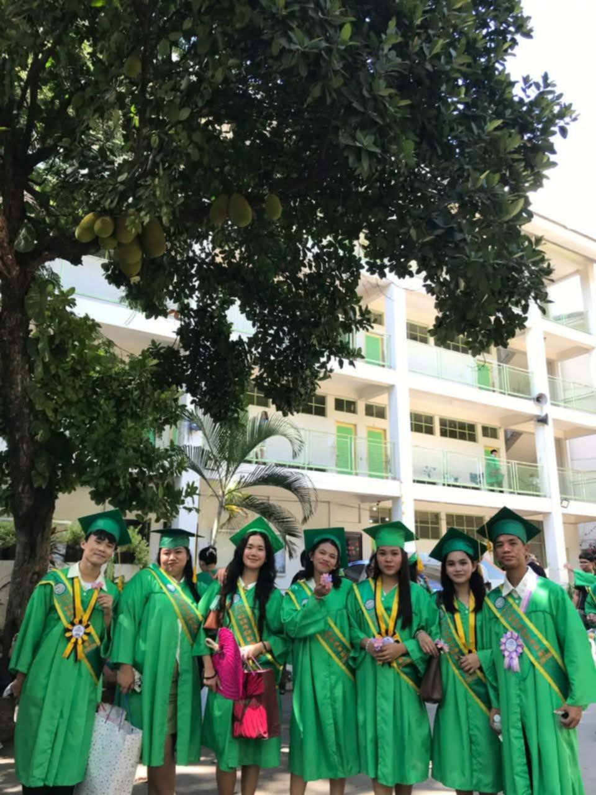
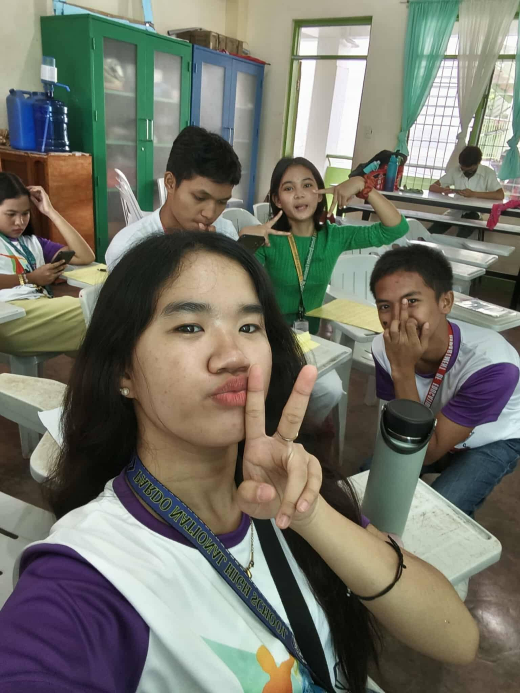
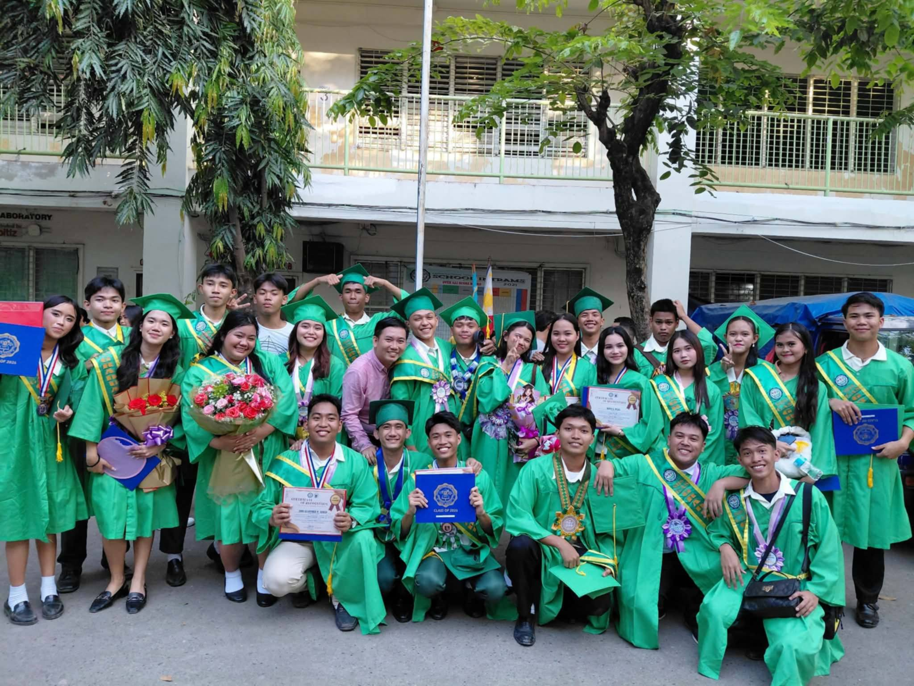

🎒 My Senior High School life is an important chapter of my journey. It is a time filled with new experiences, unforgettable memories, and valuable lessons. Through my experiences in school, I have met different people, built friendships, and learned more about myself. These moments have made my school life meaningful and memorable.
💪 Being a student is not always easy. Assignments, projects, examinations, and other school responsibilities can sometimes be challenging. However, these experiences teach me to become more responsible, patient, and hardworking. I believe that every challenge is an opportunity to learn, improve, and become a better version of myself.
🚀 My goal is to finish my studies and pursue a career in web development. I want to improve my computer skills, learn more about designing and creating websites, and gain knowledge that I can use in the future. I know that reaching my goal will require effort, patience, and determination, so I will continue learning and doing my best one step at a time.
📖 My Senior High School experiences continue to teach me important lessons about education, friendship, and responsibility. Every day gives me a chance to learn something new and prepare myself for future challenges. I know that my journey is still continuing, and I look forward to the opportunities and experiences that await me.